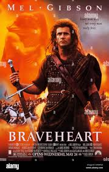
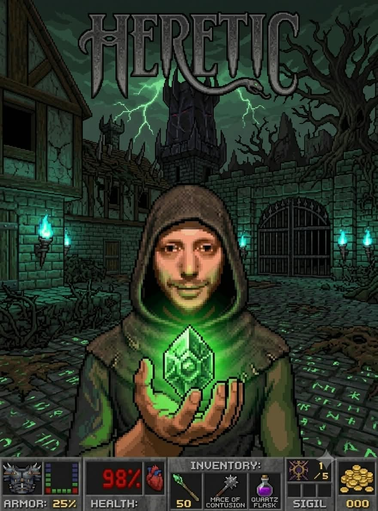
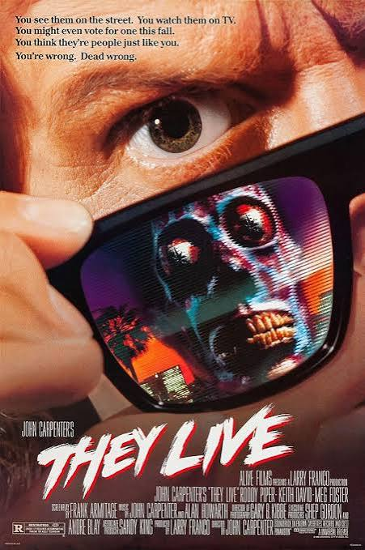
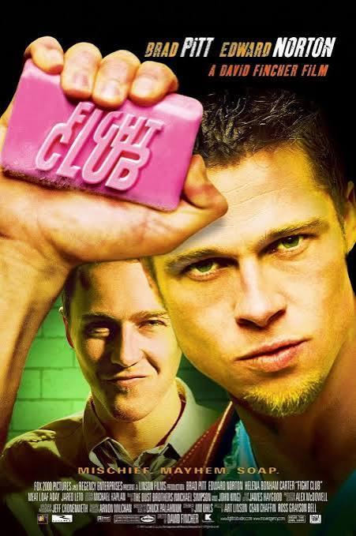
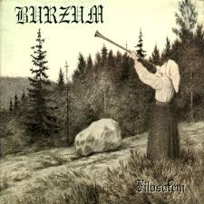
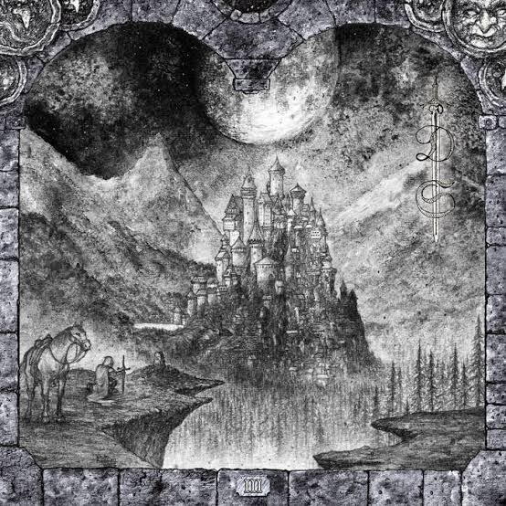
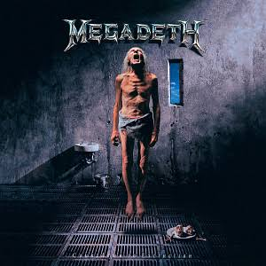

// HABILIDADES TÉCNICAS (SKILLS)
- Java
- C++
- Linux
- JavaScript
// PELÍCULAS FAVORITAS (IMDb)


// DISCOS FAVORITOS



[ RADAR EN ESPERA: SIN ACTIVIDAD ]







[ RADAR EN ESPERA: SIN ACTIVIDAD ]